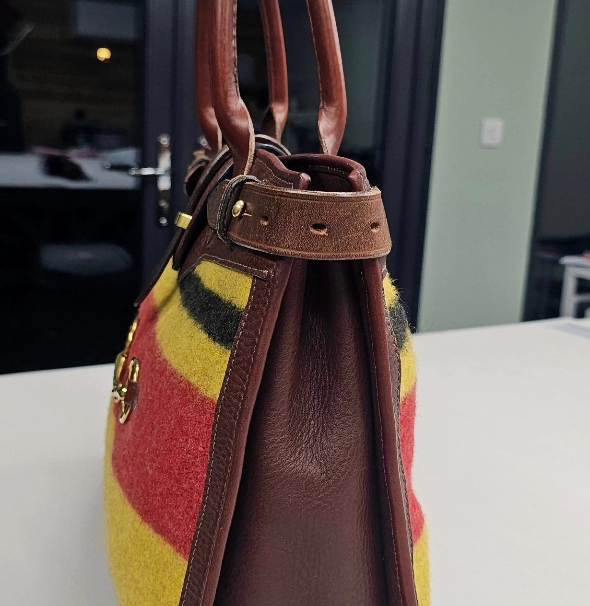

The maker
One maker. One bench.
Zoe Smith makes every piece herself. Each hide is chosen, cut, stitched and finished at her own bench, and nothing leaves it until the last edge has been burnished smooth and her name pressed into the leather.
Her work moves easily between worlds: the stable yard, the country house, and the finest interiors afloat and ashore. What joins them is a saddler's discipline, and a belief that good leather should be made to be used, and to last a lifetime.